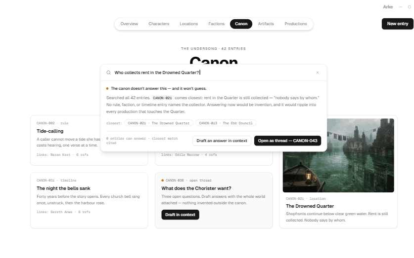
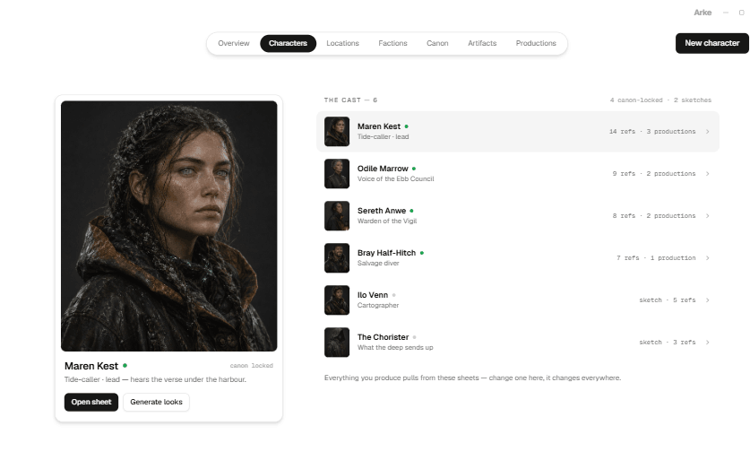

01
01Nothing changes until you accept.
Every draft arrives as a proposal. Arke checks what it would affect, shows the ripple, then waits. The screen is the gate.
See the accept gate
Arke holds your characters, places, canon and visual language as one living source. Every production draws from it. Author once. Produce everywhere.
Most creative tools are organised around projects. Arke starts one level higher: with the world every project shares.
01Every draft arrives as a proposal. Arke checks what it would affect, shows the ripple, then waits. The screen is the gate.
See the accept gate
02Ask the world anything. Every claim cites the entry that supports it. When the record is silent, Arke says so instead of inventing behind your back.
See canon at work 03
03A main photo and one character sheet become the reference set. They follow the character into every frame, on every provider that accepts them.
See one sheet, every frameTalk the work through. Review what Arke proposes. Generate one shot at a time. Accepted takes assemble themselves.
Characters, locations, factions, canon and the look live together. Productions cite them by version instead of copying them into another folder.

Your world carries a versioned visual language. Every image inherits it; every exception says where it came from. Earlier work keeps the look it was made under.


A main photo establishes identity. One generated character sheet carries the turnarounds, expression, detail and proportion. Two accepts produce a character ready to travel.


Worldbuilding has long pauses and difficult names. Hold to talk, watch the transcript arrive, correct it before sending, and hear the answer in a voice you choose.
Voice proposes. The screen disposes. Speech can draft a world, a character or a canon entry. It can never accept, dispatch or spend.

A character changed for one story is the same character waiting in the next film. Every production starts with the cast, canon and look already there.
Arke is a free, MIT-licensed Windows application. The folder is the durable truth; providers are replaceable.
Canon and sheets are Markdown. Structure is JSON. Copy the folder and the whole world comes with it.
Provider keys stay in the OS credential store. Only generations you explicitly approve are dispatched.
Choose which configured model writes, draws, animates or speaks. Unavailable options explain what they need.
Whisper and Kokoro run on your machine. Local runtimes remain visible beside cloud providers.
A name and a sentence are enough. Arke holds everything it becomes.